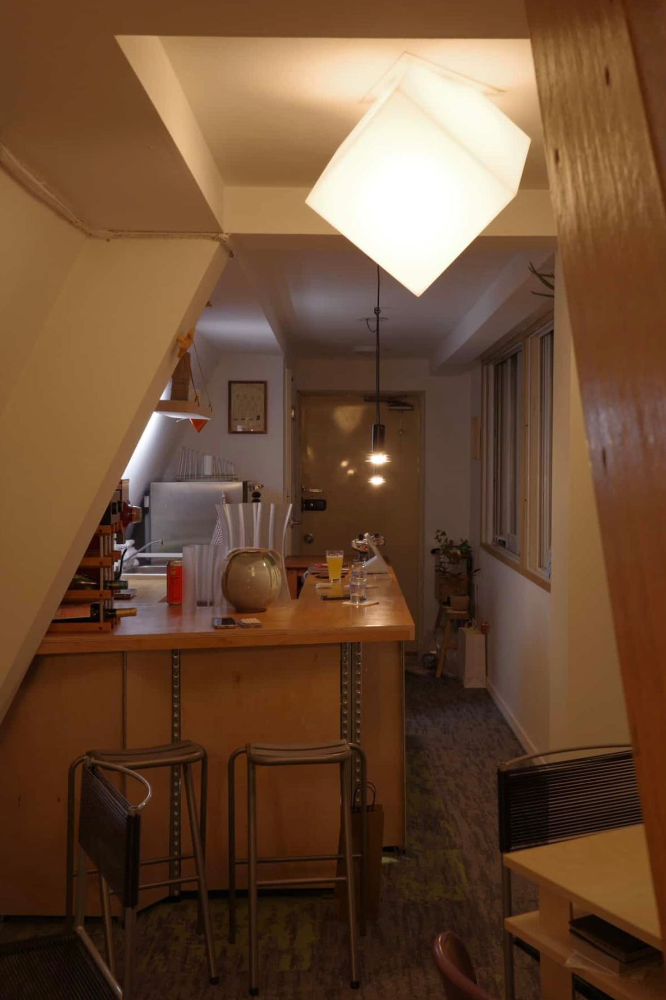
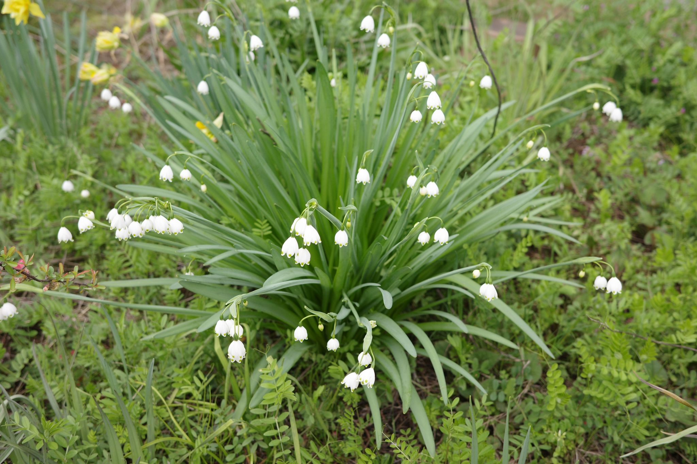
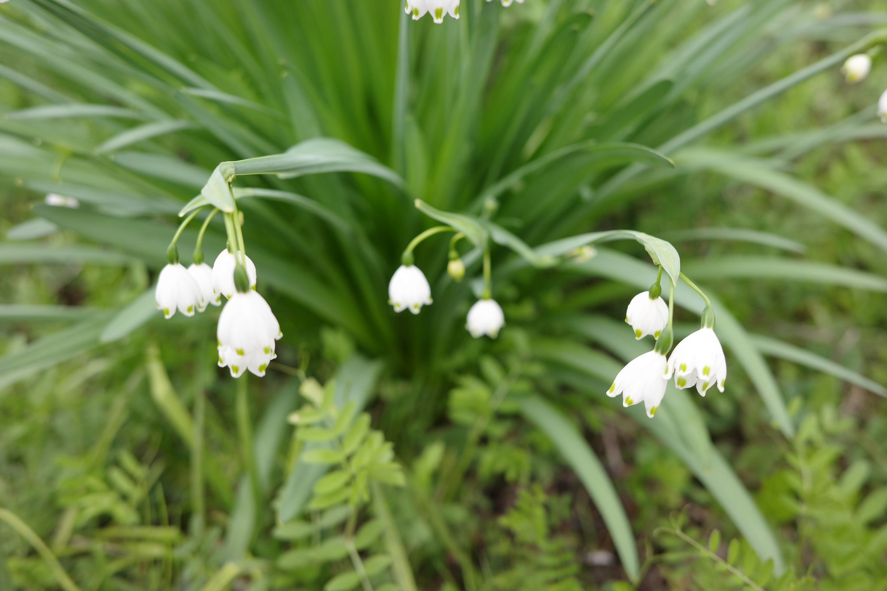
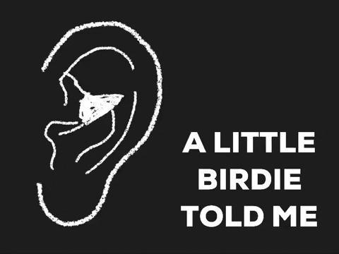
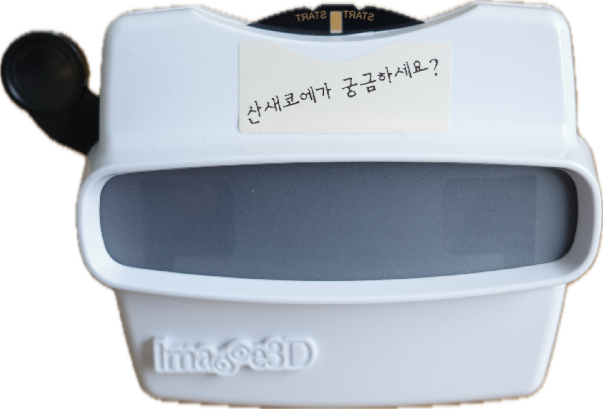
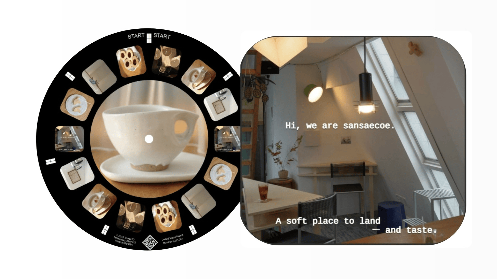

a soft place to land — and taste .
작은 것들을 하나씩 눌러보세요
About
고개를 높이 들어야 보이는
좁은 삼각형 건물의 꼭대기 6층.
처음 이 공간을 마주했을 때,
도심의 소음에서 멀찍이 떨어져
높은 곳에 자리를 잡은 ‘산새의 둥지’같다는 생각을 했습니다.
산새의 둥지, 그 둥지 속의 산새.
커피 coffee 를 포함한 음료와 쿠키 cookie 로 시작했기에
공통된 알파벳인 코에 coe 를 붙였고,
이는 일본어로 ‘소리(こえ)’라는 뜻을 가지고 있기도 합니다.
실제로 이 곳에선 새들의 소리가 가깝게 들리기도 하고,
저희가 고심해 고른 배경 음악 속에서도 새들의 지저귐이 섞여 나옵니다.
영어로 적어 본 sansaecoe 는
가만히 들여다보면,
어느 하나 툭 튀어나온 것 없이 물 흐르듯 매끄러운 모양입니다.
이 모양처럼, 이곳에서만큼은
편안한 소리와 조화로운 맛을 느끼며
부드러운 시간을 보내시길 바랍니다.

[sansaecoe] Hiyiko Cup Story

사물에 마음이 깃들 수 있을까요.
병아리잔 하나로 이어진 실타래를 잡고 닿은 곳은 코우지 작가님 부부의 작업실이었습니다.
후쿠이에서 나고 자란 소년은 고향 땅에 머물렀기에 이곳의 붉은 점토를 만지는 사람이 될 수 있었다고 말합니다.
뜨거운 가마 속에서 거친 흙이 단단해지는 동안, 작가님은 잔의 곡선을 아주 조금씩 더 다정하게 다듬어 나갔습니다.
그렇게 20년이라는 시간이 이 작은 잔의 곡선 위에 쌓였습니다.
좁은 계단을 올라 마주한 다락방의 빼곡한 병아리잔들 사이로 한 사람이 묵묵히 지켜온 시간이 가만히 고여 있었습니다.

좋은 사물에 둘러싸여 살아가는 매일매일의 삶은 우리를 더 나은 곳으로 이끌어줄 수 있을까요.
준비해 간 쿠키와 차로 마음을 전하고, 건네주신 하부타에 모찌를 품에 안고 돌아오는 길.
발치에 닿은 맨홀에는 두마리의 새가 새겨져 있었습니다.
여러 차례의 역경을 이겨낸 이 도시의 상징, 불사조라고 합니다.
새에 담긴 마음을 모아온 우리의 여정이 낯선 길 위에서도 이어진 것 같아 참 반가웠습니다.

후쿠이의 불사조 맨홀이 궁금하면 클릭!Viewfinder


Rental
대관문의는 인스타그램 @sansaecoe 으로 메세지 부탁드립니다!
기본 2시간부터 1일 대관까지 가능합니다.
일시 중단
쿠키박스는 여러 이유(섬세하고 얇은 모양으로 인해 완충재로도 잡히지 않는 파손이라든지.. 필링이 녹는 문제라든지..ㅠㅠ)로 잠시 예약을 중단하였습니다.
고심하여 다시 돌아오겠습니다!
Contact
기타 문의 및 제안은 @sansaecoe 로 메세지 주세요.
언제나 열려있어요!
Hours & Directions
매주 수요일은 정기휴무입니다.
비정기 휴무는 인스타그램 @sansaecoe 에서 알려드립니다.
서울 강남구 압구정로30길 60, 6층